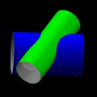

|
|
|
When two or more cylindrical pipes intersect, a saddle-shaped
curve is formed. To join the pipes (in a "saddle" or "fishmouth"
joint), we need to first trim them ("coping") along that curve. This
tool computes the curve, and unrolls it into a template. You can then
print that template, and wrap it around the pipes to mark them
for cutting.
Here are some examples of joints this can model:

Some notes:
- In the generated templates, the color of cut lines where a
tube intersects the outside of another tube is the same
as the color used to show that intersecting tube in the 3d
model. If wall thickness is enabled, then cut lines where a tube
intersects the inside are drawn in grey.
- There will always be a seam in your template, where the paper wraps
back around on itself. If something important ends up on the seam,
then change the "Template Seam". For example, a change from zero to
180 degrees moves whatever used to be at the seam to the exact
center of the template.
- By default, a 10 mm grid is overlaid on your output. That makes it
easier to wrap it around the pipe without getting skewed, or to
reassemble a pattern tiled across multiple sheets of paper.
- The permalink saves the tube geometry and your view of the 3d model
in the (rather long) URL. You can bookmark it, or send it to other
people.
- The "Lines per Circle" setting determines how many line segments are
used to approximate the circular profiles. More is more precise and
slower. A few hundred is usually good.
- The tubes can intersect at any angle. Their axes may be skew. Multiple
tubes are supported, with each tube intersected against all the others.
- The angle and position (offset) of subsequent tubes is given with respect
to the first tube. For example, if the first tube's axis is the z axis,
and the second tube is placed perpendicular along the y axis, then for
that second tube:
- "Tube 1 Axis" is the z axis
- "This Tube Axis" is the y axis
- "Neither (Radial)" is the x axis
- If the joint is like a cross, then the intersecting pipe is supposed to
intersect the first pipe in two places, going all the way through. If it's
like a tee, then the intersecting pipe is supposed to intersect once
and then stop.
- At very oblique angles, you may need to adjust the "This Tube Axis"
offset to make tee joints work properly.
- For joints where the pipes don't fully intersect (and
one hangs off the side of the other; this can happen
only if you make the pipes' axes skew by setting the
"Neither (Radial)" offset), choose "like a cross".
- If you can't figure out which tube you're editing, try hiding and then
re-showing it. Changes aren't effective until you click
"Update".
- Intersection curves are computed numerically (and not in closed form),
to make it easier to support geometry beyond cylinders later.
- This is all done on the client side.
April 2015, Portland OR
|